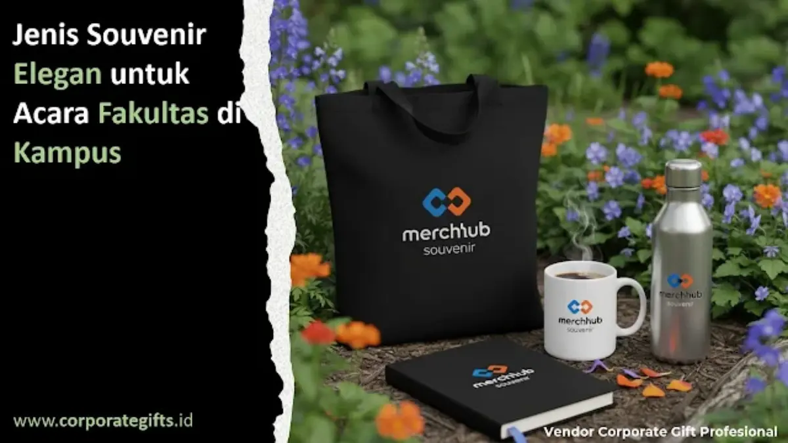

Corporate Gifts ID - Jenis souvenir elegan untuk acara fakultas di kampus meliputi gift set hardbox terpadu, tumbler vacuum flask stainless steel, tote bag kanvas dan pouch kulit sintetis, plakat kristal kehormatan, hingga perangkat digital praktis seperti powerbank dan flashdisk berbalut kayu. Pemilihan jenis cinderamata yang tepat bertumpu pada tujuan seremonial acara, karakteristik rumpun keilmuan fakultas, serta standar kualitas material agar cenderamata kampus tampil berkelas sekaligus memperkokoh citra reputasi universitas di kancah nasional.
Pemberian cinderamata resmi kini tidak lagi terbatas pada momen pelepasan wisuda sarjana atau seminar umum. Berbagai agenda penting kampus, mulai dari perayaan dies natalis, simposium ilmiah internasional, pelantikan dekanat baru, hingga kunjungan kerja sama antarkampus menjadi momentum diplomasi akademik yang sangat berharga untuk memperkenalkan karakter khas lembaga pendidikan tinggi.
Poin Kunci Cinderamata Fakultas Elegan:
- Kurasi Berbasis Martabat Akademik: Menghindari cinderamata generik murahan dan beralih ke produk fungsional berkualitas dengan sentuhan personalisasi logo resmi.
- Kesesuaian Rumpun Keilmuan: Desain cenderamata merefleksikan kultur studi (gaya korporat rapi untuk fakultas ekonomi, sentuhan artistik untuk fakultas humaniora).
- Ketahanan Material & Cetak Awet: Teknik laser engraving dan cetak UV flatbed menjamin logo universitas tidak pudar meski digunakan bertahun-tahun.
- Diplomasi Antarlembaga: Cinderamata premium memancarkan keseriusan dekanat dalam membangun kolaborasi riset dan industri jangka panjang.
5 Jenis Souvenir Elegan Pilihan Fakultas
Berdasarkan preferensi institusi pendidikan tinggi terkemuka, berikut lima kelompok cinderamata yang paling efektif mewakili citra profesional dekanat:
- Executive Gift Set Terpadu: Perpaduan pena logam berbobot mantap, buku catatan (notebook) bersampul kulit sintetis premium, dan gantungan kunci berlogo grafir laser. Dikemas dalam rigid hardbox dengan bantalan spons presisi, paket ini menjadi standar emas untuk narasumber tamu dan pimpinan universitas mitra.
- Tumbler Vacuum Flask Stainless Steel: Selain sangat fungsional untuk rutinitas kerja harian dosen dan mahasiswa, tumbler kantor custom mendukung kampanye kampus hijau bebas sampah plastik (eco-campus sustainability).
- Tote Bag Kanvas & Pouch Organizer Eksklusif: Menggunakan kain kanvas tebal dengan jahitan kuat serta resleting metalik. Sangat digemari peserta konferensi ilmiah karena mempermudah mobilitas membawa dokumen, tablet, dan perlengkapan harian.
- Plakat Kristal Kayu & Aksesori Akademik: Plakat beraksen kuningan timbul, medali cor logam bersepuh emas, dan lencana pin jas bertekstur elegan memberikan kesan penghargaan monumental pada momen pelepasan pensiun dosen senior atau apresiasi wisudawan terbaik.
- Perangkat Digital Modern: Powerbank tipis berkapasitas besar bersertifikasi keselamatan, flashdisk berbahan bambu ramah lingkungan, dan wireless charging pad yang menyuarakan adaptasi fakultas terhadap perkembangan teknologi masa depan.
Souvenir sebagai Representasi Identitas Rumpun Keilmuan
Setiap fakultas memiliki filosofi dan budaya akademik yang khas. Cinderamata yang berhasil adalah produk yang mampu menyalurkan kepribadian rumpun keilmuan tersebut secara natural.
Sebagai ilustrasi, Fakultas Ekonomi dan Bisnis yang lekat dengan dunia korporasi cenderung serasi memilih tumbler stainless berfinishing doff hitam atau card holder kulit elegan. Sementara Fakultas Seni Rupa dan Desain dapat menonjolkan kreativitas visual lewat buku sketsa jilid benang dengan sentuhan grafis custom dari vendor souvenir custom berpengalaman. Konsistensi kode warna makara dan proporsi logo resmi universitas adalah kunci mutlak keanggunan visual.
Tabel Panduan Souvenir Elegan Berdasarkan Agenda Fakultas
Tabel berikut merangkum pemetaan cenderamata ideal berdasarkan karakteristik agenda akademik di lingkungan kampus:
| Kategori Agenda Kampus | Rekomendasi Cinderamata Utama | Kesan Nilai yang Ditonjolkan |
|---|---|---|
| Wisuda & Pelantikan Pejabat | Plakat kristal akrilik, gift set hardbox, pin logam emas | Prestise tinggi, kehormatan resmi, dan kenangan abadi |
| Seminar & Workshop Ilmiah | Notebook spiral kulit, pulpen logam grafir, tote bag kanvas | Fungsional harian, kerapian kerja, dan efisiensi mobilitas |
| Dies Natalis & Festival Kampus | Tumbler custom suhu, pouch travel, flashdisk kartu berlogo | Semangat kebersamaan, gaya hidup modern, dan kepedulian lingkungan |
| Audiensi Universitas Mitra & B2B | Executive bespoke gift set, plakat kayu kuningan, batik kampus | Kemitraan profesional, tata krama diplomatik, dan kredibilitas tinggi |

Kemasan boks elegan dengan finishing magnetik memberikan pengalaman unboxing istimewa bagi para tamu kehormatan dan delegasi kampus.
Cara Memilih Souvenir Sesuai Karakter Acara Kampus
Untuk memastikan cinderamata yang dipesan tepat sasaran dan terhindar dari pemborosan anggaran, panitia dekanat disarankan menerapkan lima parameter seleksi:
- Akurasi Warna dan Simbol Makara: Pastikan penyedia jasa mencetak warna yang selaras dengan buku panduan visual universitas, tanpa deviasi nada warna.
- Durabilitas dan Kekuatan Material: Utamakan bahan stainless steel SUS 304 food-grade atau kanvas berserat rapat yang tahan terhadap pemakaian intensif.
- Teknik Penjenamaan yang Tahan Cuci: Manfaatkan teknologi grafir laser (laser engraving) pada logam atau sablon UV flatbed agar logo tidak terkelupas saat dicuci berulang kali.
- Kerapian Kemasan Luar: Boks pembungkus berlogo foil perak atau emas (hot print stamping) secara instan mengangkat nilai persepsi cinderamata.
- Penjadwalan Pengadaan yang Cermat: Mulai proses tender atau konsultasi vendor setidaknya 3 hingga 4 minggu sebelum acara untuk memberikan ruang bagi proses persetujuan sampel fisik.
Tren Desain Souvenir Kampus 2026: Eco & Fungsional
Memasuki tahun 2026, paradigma cinderamata akademik kian menitikberatkan pada aspek ramah lingkungan (eco-sustainability) dan fungsionalitas murni. Kampus-kampus terkemuka meninggalkan barang pajangan sekali pakai yang minim faedah dan beralih ke produk yang dapat menemani aktivitas harian sivitas akademika.
Material alami seperti kayu jati belanda terkelola, serat bambu, dan kertas kraft daur ulang bersertifikasi menjadi primadona baru. Dipadukan dengan tipografi minimalis modern, cinderamata berkonsep ramah lingkungan ini menegaskan citra fakultas sebagai institusi yang tanggap terhadap krisis iklim global.
Manfaat Strategis Cinderamata bagi Branding Akademik
Penyediaan souvenir bermutu tinggi memberikan imbal hasil nyata bagi eksistensi fakultas dalam jangka panjang:
- Memperkuat Wibawa Institusi: Menegaskan profesionalitas dekanat di hadapan penguji eksternal, dewan penyantun, dan asesor akreditasi nasional maupun internasional.
- Menumbuhkan Jiwa Korsa Sivitas Akademika: Mahasiswa dan tenaga pengajar merasakan kebanggaan mendalam saat mengenakan atau menggunakan atribut resmi fakultas yang bermutu prima.
- Media Promosi Organik Berjangka Panjang: Setiap kali alumni membawa tas jinjing atau botol minum berlogo almamater ke ruang publik atau kantor mereka, reputasi fakultas tersosialisasi secara luas tanpa biaya iklan tambahan.
Pertanyaan Seputar Souvenir Fakultas Kampus (FAQ)
Kesimpulan dan Solusi Pengadaan
Memilih jenis souvenir elegan untuk agenda fakultas di kampus bukan sekadar membagikan cinderamata seremonial, melainkan investasi strategis dalam mengokohkan reputasi akademik institusi. Desain yang estetis, material tahan lama, dan keselarasan filosofi universitas akan merepresentasikan citra dekanat yang profesional, berwibawa, dan siap bersaing di tataran global.

Ditulis oleh: Sholikhatun Nikmah
Creative Product Designer & Bespoke Packaging ConsultantDesainer visual dan konsultan kemasan kreatif di CorporateGifts.ID. Berpengalaman merancang mockup 3D cenderamata akademik, harmonisasi palet warna Pantone almamater, serta kurasi paket suvenir seminar kampus berstandar eksekutif.
Lihat Profil Lengkap & Panduan Lainnya